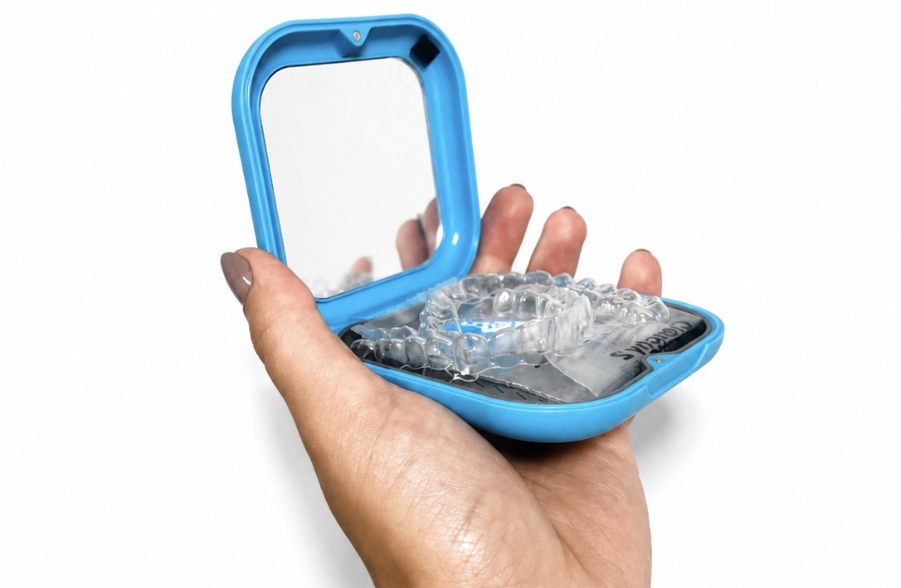

Dentes desalinhados podem impactar muito mais do que apenas a estética do sorriso: afetam a confiança ao sorrir, falar, tirar fotos e até a saúde da mordida.
Com os alinhadores estéticos, é possível corrigir o sorriso de forma discreta, confortável e moderna, sem metais e sem comprometer sua rotina.
Na Clínica Oral, realizamos todo o planejamento digital do seu tratamento para proporcionar previsibilidade, conforto e resultados naturais.
Preencha para garantir seu horário
Porque alinhar um sorriso vai muito além de deixar os dentes retos. Cada sorriso possui características únicas: mordida, formato facial, proporção dentária, função mastigatória e objetivos estéticos.
O que você recebe ao escolher nossa clínica:
Realizamos escaneamento intraoral 3D e um estudo detalhado da sua mordida para criar um tratamento totalmente personalizado e previsível.
Trabalhamos com alinhadores transparentes modernos, discretos e confortáveis, permitindo que você realize seu tratamento sem comprometer sua estética no dia a dia.
Os alinhadores são removíveis, facilitando alimentação, higiene e rotina social com muito mais praticidade quando comparados aos aparelhos convencionais.
Nosso objetivo não é apenas alinhar dentes, mas criar equilíbrio, harmonia facial e melhora funcional da mordida.
Cada etapa do tratamento é acompanhada de perto pela nossa equipe para garantir evolução segura, confortável e previsível.
Um sorriso mais harmônico, saudável e natural. Mais confiança para sorrir, conversar, aparecer em fotos e viver momentos importantes com segurança.
Agende sua avaliação e descubra como os alinhadores estéticos podem transformar seu sorriso de forma discreta e moderna.
A Clínica Oral nasceu com o propósito de unir excelência técnica, tecnologia de ponta e um atendimento verdadeiramente humanizado. Acreditamos que um sorriso bonito precisa estar alinhado à saúde, função e autoestima, tudo planejado com precisão e cuidado aos detalhes.
Cada tratamento é individualizado, baseado em diagnóstico digital, planejamento minucioso e uma equipe comprometida com alto padrão. Aqui, o paciente não é apenas atendido: ele é acolhido, orientado e acompanhado em cada etapa.
Se você busca alinhadores estéticos com tecnologia, segurança e uma experiência diferenciada em odontologia, será um prazer receber você.
Fácil Localização: Rua Funchal, 551 conj 81 - Vila Olímpia
Humanização: Mais que odontologia. Experiência e acolhimento.



Estamos localizados na Rua Funchal, 551 conj 81 - Vila Olímpia